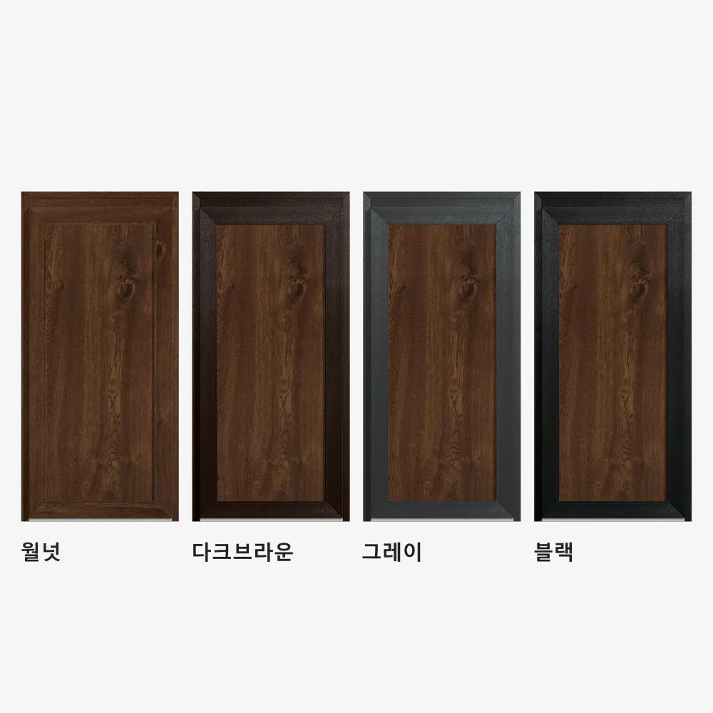
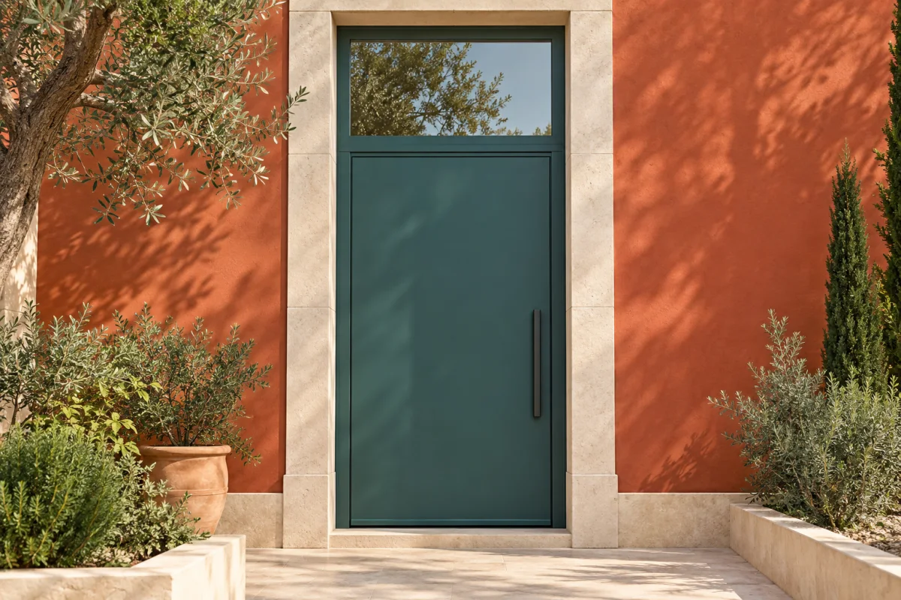
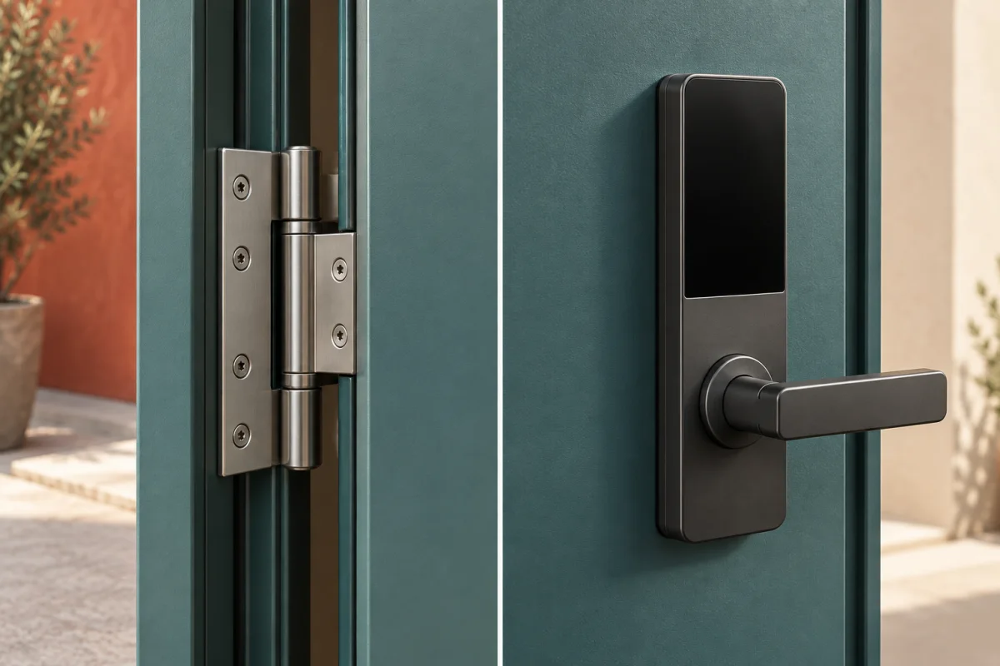
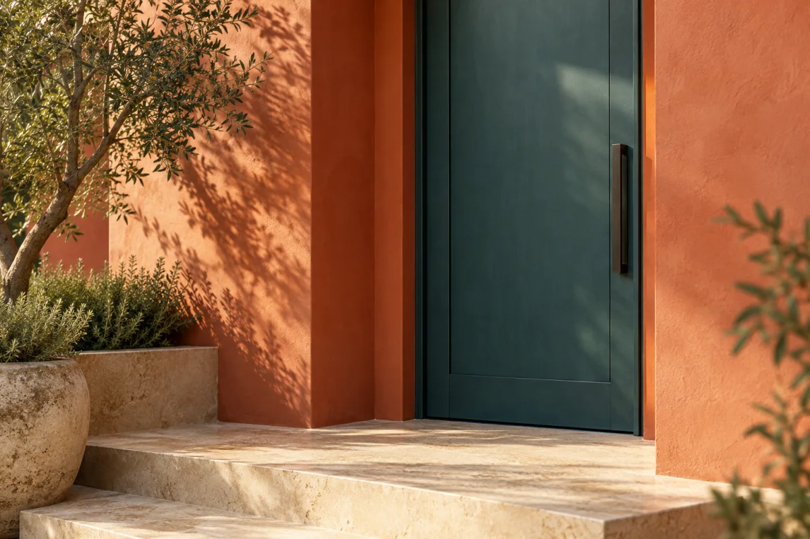
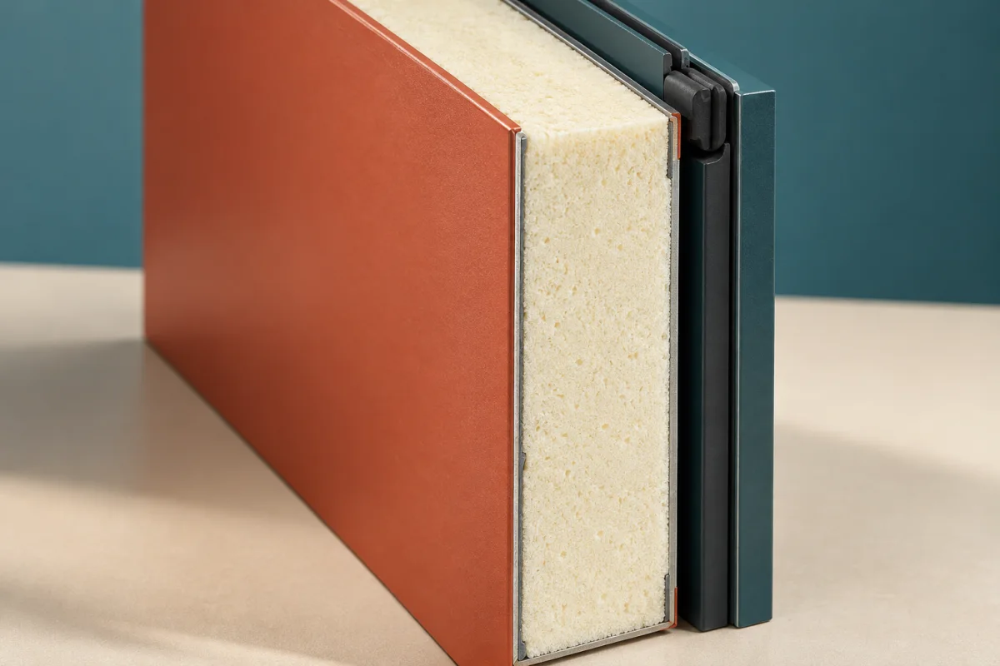
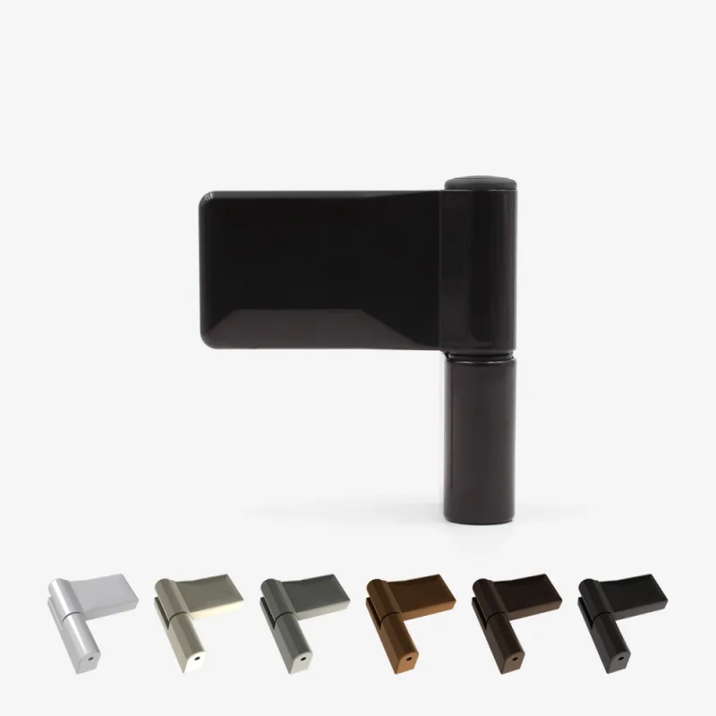
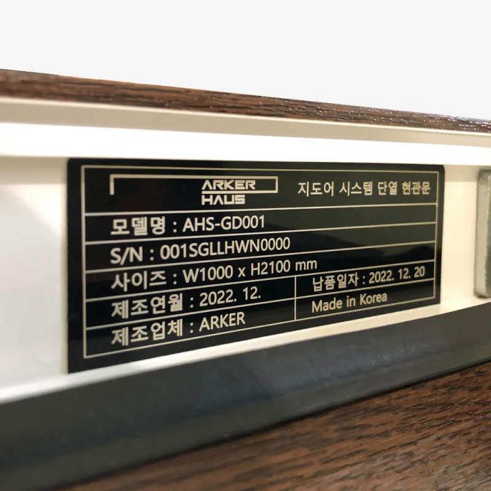
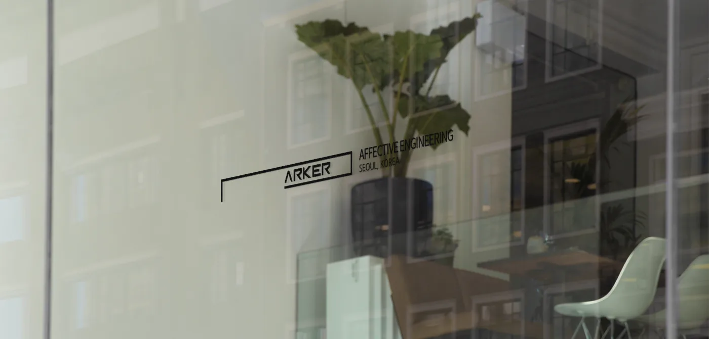

SYSTEM ENTRANCE DOOR
AHS-GD001
월넛 톤이 공간에 더하는 차분한 표정.
원하는 규격과 마감은 상담을 통해 확인합니다.
1999년부터 이어온 정직한 금속 도어 제조 기술 위에,
우레탄을 활용한 초고단열 연구와 항공우주 공학적 정밀함을 결합했습니다.
혹한기 시골 농가주택의 칼바람과 결로를 막아주는 두꺼운 1등급 단열 방화 현관문부터,
공장에서 직접 정밀 가공하는 초슬림 3연동 중문까지 —
아커(ARKER)는 집의 온기와 안전을 지키는 하나의 완성된 작품을 만듭니다.
건축의 첫인상부터 매일의 손끝까지.
혹한기 농가주택에서도 결로 없이 따뜻한 1등급 시스템 단열 현관문과
공장 직영으로 정밀 생산하는 3연동 중문을 만나보세요.
SYSTEM ENTRANCE DOOR
월넛 톤이 공간에 더하는 차분한 표정.
원하는 규격과 마감은 상담을 통해 확인합니다.
SYSTEM ENTRANCE DOOR
정돈된 선과 깊이 있는 색감.
공간에 어울리는 구성과 옵션을 함께 확인합니다.
보기 좋은 디자인.
그 안을 채우는 엔지니어링.
둘 다 놓치지 않는 선택.
모델을 선택하면 싱글부터 양소대까지 실제 구성 사진과 프레임 색상을 비교할 수 있습니다.
공장에서 직접 제작하는 3연동 슬림 중문도 함께 상담하세요.
30년 알루미늄 가공 노하우의 고강도 초슬림 프레임과 부드러운 듀얼 댐퍼를 적용했습니다.
현관문(G-DOOR)과 연계 시공 시 실내외 외풍과 소음을 2중으로 완벽 차단합니다.
모델과 형태를 함께 고르고, 프레임과 개폐 방향을 살펴보세요.
다섯 가지 모델을 원하는 구성으로 비교할 수 있습니다.

목재 무늬 패널과 단정한 프레임
구성 선택
AHS-GD001
W1000 × H2200 mm
한 짝의 문으로 구성하는 기본형입니다. 현관의 유효 개구부와 문이 열리는 공간을 함께 확인하세요.
규격은 문틀 외경 기준의 구성 예시입니다. 좌우 방향은 건물 외부에서 바라보는 기준이며, 실제 제작 치수는 현장 조건을 확인해 확정합니다.
월넛, 다크브라운, 그레이, 블랙.
패널과 외벽의 조합을 함께 비교해 보세요.
사진과 화면 설정에 따라 실제 색감은 다를 수 있습니다. 주문 전 마감을 확인해 주세요.


입구가 높다면 상부 고정 패널을 더하는 구성을 검토할 수 있습니다. 비규격은 가로·세로 치수와 현장 조건을 함께 보내 주세요.

문이 열리는 방향과 주변 동선을 먼저 확인합니다. 수동 키 또는 호환 스마트 도어록 옵션은 선택한 구성에 맞춰 안내합니다.
두 이미지는 구조와 옵션의 이해를 돕기 위한 AI 생성 개념 이미지입니다. 실제 제작 가능 여부와 부품 사양은 상담 시 확인합니다.

빛에 따라 달라지는 색과 질감, 반듯하게 이어지는 선.
매일 마주하는 문이 공간의 표정이 됩니다.

표면 안쪽의 단열층은 열이 오가는 속도를 늦추고,
문틀의 밀착 부위는 틈새 바람을 줄여 줍니다.
색과 질감으로 공간의 인상을 만듭니다.
실내외 사이에서 열의 이동을 늦춥니다.
문과 문틀 사이의 틈새 바람을 줄입니다.
외관과 단면은 이해를 돕기 위한 AI 생성 개념 이미지입니다. 실제 제품의 디자인·내부 구조·사양과 다를 수 있습니다.
타협 없는 두께와 소재,
공학이 완성한 1등급 성능.
G-DOOR는 일반 도어보다 훨씬 두꺼운 구조 안에 고밀도 우레탄 폼을 고압 충진하고, 정밀 다중 잠금 메커니즘을 결합했습니다. 혹한의 농가주택에서도 결로와 외풍 없는 차이를 확인해 보세요.
한양대 석사 과정에서 연구한 우레탄 단열 극대화 메커니즘을 적용했습니다. 프레임 내부에 고밀도 폴리우레탄 폼을 빈틈없이 고압 주입해 열교 현상(Thermal Bridge)을 원천 차단하며, 국가공인 시험을 통해 기밀성 1등급을 보장합니다.
4면이 겨울철 칼바람에 직접 노출되는 시골 농가주택과 전원주택을 위해 도어 두께를 대폭 강화했습니다. 묵직한 구조 안정성으로 문짝의 비틀림과 휨을 방지하며, 화재 시 화염과 유독가스 확산을 억제하는 방화 성능을 함께 갖추었습니다.
정식 규격의 국산 보강재를 3중으로 삽입하여 문짝의 기계적 내구성을 높였습니다. 문틀 접합부에는 내열성·내오존성이 탁월한 EPDM 가스켓을 2중으로 둘러 혹한기 찬바람과 미세먼지, 소음을 밀착 차단합니다.
외부 자외선과 적외선에 의한 표면 열변형을 방지하는 Heat Block Function(HBF) 필름으로 마감했습니다. 비바람과 태양광에 사계절 노출되는 주택 현관에서도 색 바램이나 들뜸 없는 내구성을 유지합니다.
도어 1짝당 하중 160kg을 견디는 유럽산 3D 시스템 힌지를 적용해 처짐 현상을 방지하고 정밀한 3축 미세 조절을 지원합니다. 특허 매립형 도어클로저는 외관 노출 없이 문이 부드럽게 닫히도록 돕습니다.
아커 공장에서 직접 생산하는 3연동 슬림 중문은 고강도 알루미늄 프레임과 충격 완화 듀얼 댐퍼를 기본 장착했습니다. 현관문(G-DOOR)과 함께 시공할 경우 실내 단열과 방음 성능을 극대화합니다.
기본 수동 키와 다중 잠금 호환 스마트 도어록을 선택할 수 있으며, 출고되는 모든 제품에는 개별 시리얼 넘버가 부여되어 생산부터 시공 후 사후 관리까지 체계적으로 관리됩니다.

개폐를 돕는 유럽산 3D 시스템 힌지. 하중을 안정적으로 지지하고 미세 간격을 조절합니다.

모델명과 개별 시리얼을 통해 생산 이력과 사후 관리를 책임집니다.
형태, 기능, 그리고 감각.
좋은 공간을 만드는 아커의 세 가지 기준.
1999년 창업된 금호금속으로부터 출발하여, 30년 가까이 묵묵히 쇠를 깎고 프레임을 다듬어 온 아버지와 외삼촌의 현장이 있었습니다. 수많은 현장 조건과 부딪히며 타협 없이 정직한 두께를 지켜온 장인의 세월이었습니다.
그 든든한 기술 위에 아들 장진우 대표가 새로운 도전을 더했습니다. 모스크바 국립 대학교 항공우주공학과에서 혹독한 극한 환경을 견디는 열차폐 공학을 익히고, 한양대학교 공학대학원에서 우레탄을 활용한 초고단열 메커니즘을 연구하며 석사 학위를 받았습니다.
"단순히 열고 닫히는 문이 아니라, 세상에서 가장 따뜻하고 안전한 하나의 완성된 작품을 만든다."
아버지의 정밀한 금속 가공 위에 아들의 단열공학을 불어넣은 아커(ARKER) — 거친 비바람과 칼바람으로부터 가족의 삶을 지키는 현대의 방주(ARK)를 짓습니다.

외삼촌과 아버지로부터 이어진 30여 년의 금속 가공과 프레임 압출 기술. 눈속임 없는 두께와 견고한 내구성의 뿌리입니다.
모스크바대 항공우주공학 출신 장진우 대표의 공학적 설계와 한양대 석사 논문 기반의 고밀도 우레탄 고압 충진 기술을 적용합니다.
혹한기 외풍과 결로를 잡는 두꺼운 1등급 방화 현관문과, 자체 공장에서 정밀 생산하는 초슬림 3연동 중문으로 완벽한 입구를 만듭니다.
모델이 정해지지 않았어도 괜찮습니다.
설치할 공간과 필요한 조건부터 알려주세요.
신축인지 교체인지, 설치 지역과 대략적인 개구부 치수를 남겨 주세요. 원하는 모델이 있다면 함께 선택합니다.
문의 형태, 문틀 규격, 경첩 방향과 도어록을 확인합니다. 사진이나 도면이 필요하면 상담 과정에서 안내합니다.
최종 사양을 기준으로 금액과 제작 일정, 배송 또는 직접 수령 조건을 확인한 뒤 진행합니다.
수령 후 제품과 구성품을 확인합니다. 사용 중 문의는 모델명과 시리얼을 함께 남기면 제품 확인에 도움이 됩니다.
설치 지역 / 신축 또는 교체 여부 / 대략적인 가로·세로 / 희망 모델과 구성
지금 모르는 항목은 비워 두세요. 확인이 필요한 내용은 상담으로 함께 정리합니다.
내 공간 상담 시작하기관심 제품을 ‘상담 후 결정’으로 두고 설치 공간과 원하는 분위기를 적어 주세요. 현관 폭, 외벽 마감, 사용 동선을 기준으로 구성을 좁혀 갈 수 있습니다.
네, G-DOOR는 4면이 겨울철 칼바람에 노출되는 시골 농가주택과 전원주택에 특화된 1등급 시스템 현관문입니다. 일반 기성문 대비 훨씬 두꺼운 도어 두께와 고압 주입 고밀도 폴리우레탄 단열 코어로 영하의 혹한기에도 결로와 외풍을 원천 차단합니다.
제품 규격은 문틀 바깥 치수 기준입니다. 상담에는 설치할 개구부의 대략적인 가로·세로를 보내고, 개구부 치수임을 함께 적어 주세요. 최종 제작 치수는 현장 조건을 확인해 확정합니다.
소대는 출입문 옆의 보조 패널 구성, 경첩 방향은 문이 회전하는 축의 위치입니다. 서로 다른 선택 항목이며 외부에서 바라보는 기준으로 상담합니다.
월넛·다크브라운·그레이·블랙 프레임과 비규격 제작을 상담할 수 있습니다. 모델, 형태, 치수에 따른 가능 여부와 추가 조건은 사양 확인 후 안내합니다.
네, 아커 공장에서 자체 알루미늄 정밀 가공 설비로 초슬림 3연동 중문을 직접 제작하고 있습니다. 현관문과 3연동 중문을 함께 시공하면 실내외 공기를 2중으로 차단해 단열과 방음 효과를 극대화할 수 있습니다.
아커의 현관문은 타사 대비 압도적으로 두꺼운 프레임 구조와 불연·단열 복합 코어를 적용해 묵직한 구조 안정성과 방화 성능, 기밀 1등급을 갖추고 있습니다.
G-DOOR는 다중 잠금 시스템과의 호환을 확인해야 합니다. 지정된 도어록 옵션을 기준으로 상담하며, 별도로 준비한 제품은 구매 전에 호환 여부를 확인해 주세요.
모델뿐 아니라 규격, 고정 패널, 마감, 도어록과 수령 방식에 따라 조건이 달라집니다. 문의를 남기면 최종 사양을 기준으로 금액과 가능한 일정을 확인합니다.
설치 지역과 신축·교체 여부를 알려 주세요. 배송이나 직접 수령 방식, 현장 설치에 필요한 확인 사항을 구분해 상담합니다. 운송비와 설치 범위는 진행 전에 확인해 주세요.
접수 완료 시 표시되는 접수번호를 보관해 주세요. 후속 문의에는 접수번호를, 사용 중인 제품 문의에는 모델명·시리얼과 증상을 함께 남겨 주세요. 기존 접수 내용을 확인하는 데 도움이 됩니다.
아커 사업장 위치를 안내합니다.
방문 전 상담으로 일정과 방문 장소를 확인해 주세요.
ARKER
공개 주소 안내: 아커 공식 회사 소개 ↗
네이버 지도에서 도착지를 확인한 뒤 출발지를 입력하면 이동 경로를 확인할 수 있습니다.
견적부터 제품, 시공에 관한 궁금증까지.
문의가 저장되면 화면에 접수번호가 표시됩니다.
담당자가 남겨주신 연락처로 상담을 이어갑니다.